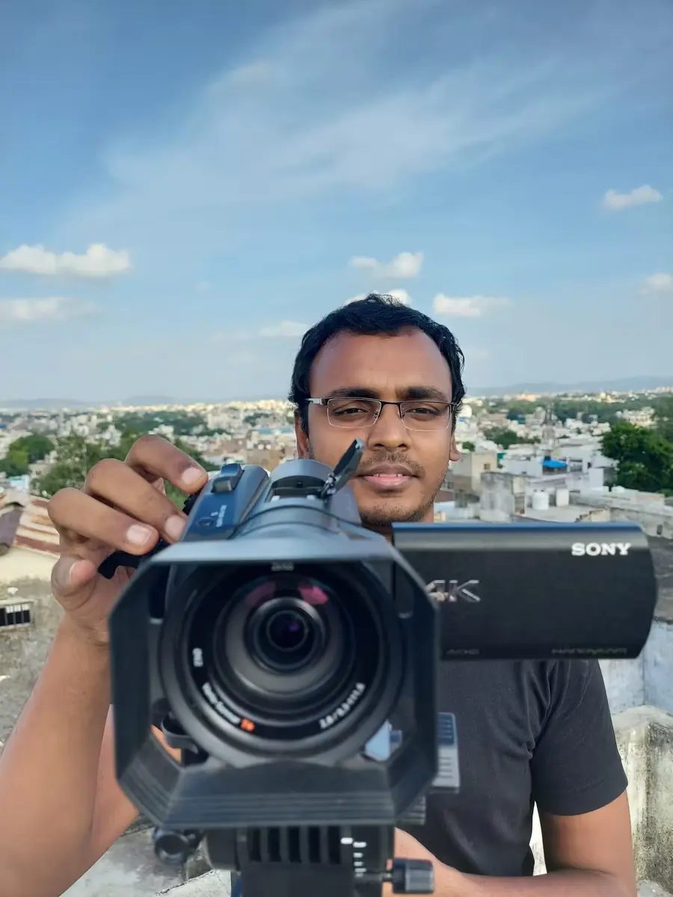
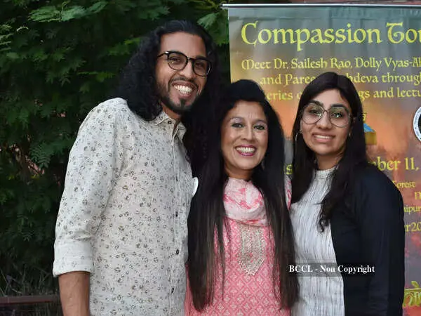
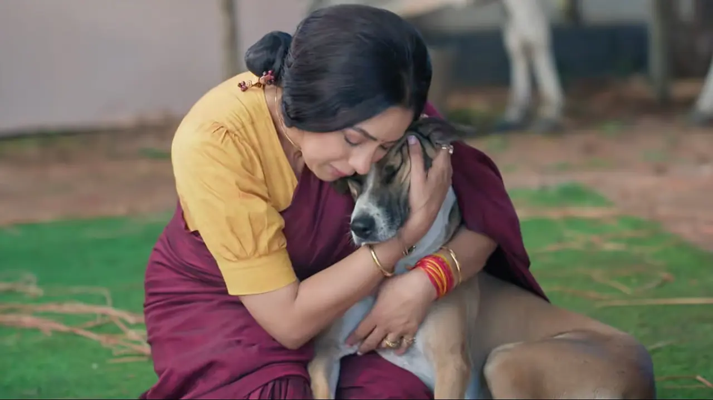
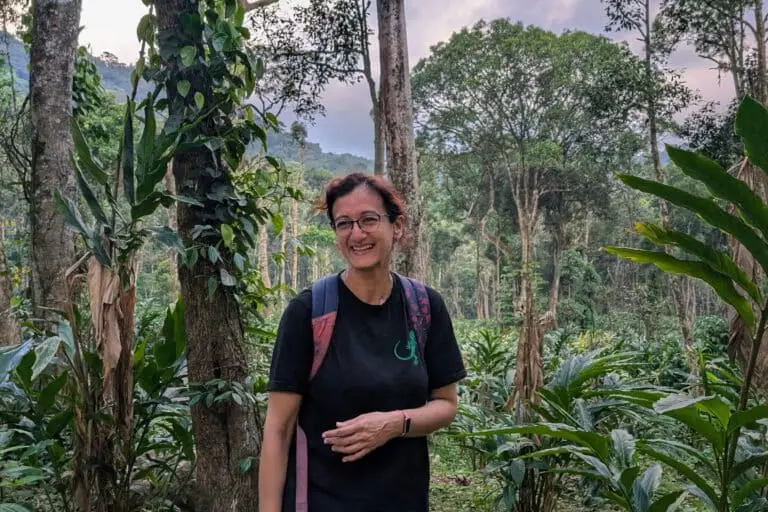
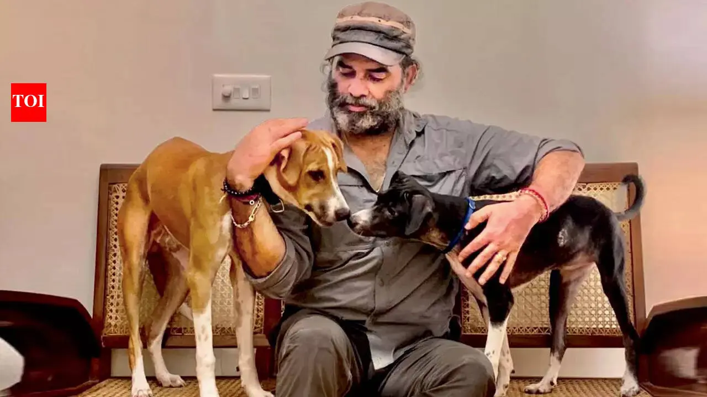

Dr Harsha Atmakuri
Maa Ka Doodh
Courageous, truth-driven filmmaking
Photo and film source
A collaborative initiative by the Film Federation of India (FFI) and People for Animals (PFA).
Mumbai 2026 | 4 October | World Animal Day
Invite-only, entry-based event.
(The reel)
Sixty-five frames from the launch, the red carpet, MECON, the Purbo Bharat summit and the season around the first edition. Tap any frame.
(CineKind Trophy)
Each trophy is a sculpture by Paresh Maity. Winners are chosen by the CineKind National Awards Committee.

(Future editions)
Nominations are for future editions only and do not provide entry to CineKind 2026.
(Last Year)
Film Federation of India with People for Animals
Kolkata · 20 December 2025 · Inaugural edition
(About)
CineKind asks whether it can move us toward animals too. Ten honours, given once a year, for films and people who leave the frame kinder than they found it.
(Roll of Honour)

Maa Ka Doodh
Courageous, truth-driven filmmaking
Photo and film source

With Aryeman Ramsay
The Land of Ahimsa
Photo and film source

Animal rescue and adoption
Compassion beyond the screen
Photo source
Fish Eye Network
Animal-free filmmaking
Photo source

Mongabay India
Environmental journalism
Photo source

A public voice for street animals
Care, vaccination and coexistence
Photo source
(The 2025 honours)
(The ceremony)
Ceremony photographs: Film Federation of India official event archive.
(In the papers)
A newspaper clipping, a garden full of microphones, and the first time the words CineKind appeared in print. Photographs from the season the country got to see.
(The season around it)
MECON 2025, the Purbo Bharat Film Summit and the FFI Achiever’s evening: the rooms where the film world and the animal cause kept ending up on the same stage.
From the frame
Three field films screened with the inaugural edition. Wild lives, told plainly.
(Before the camera rolls)
A real animal in a directed shot needs pre-shoot permission from the Animal Welfare Board of India. CineKind puts the process in plain language, before a production learns it too late.
(CineKind 2025)
The inaugural awards put humane storytelling on the national film industry’s record. Explore the official event archive or read the government broadcaster’s report from the ceremony.